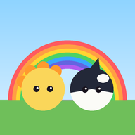
3살 쌍둥이가 놀면서 한글을 보고 듣는 게임 모음. 읽으라고 시키지 않고, 틀려도 괜찮아요. 손가락 하나로 놉니다.
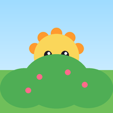
글자 까꿍물건을 톡! 그림과 이름이 까꿍노는 법 물건을 톡 누르면 뒤에서 그림이 나오고 "까꿍! 나, 비. 나비!" 하고 읽어줘요. 티노·코코를 둘 다 찾으면 다음 장면.
익히는 것 그림·소리·글자 잇기(통단어), 이름 글자.
같이 놀 때 글자를 손가락으로 가리키며 따라 읽어 주세요.
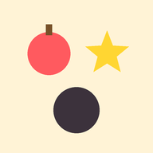
자음 짝꿍ㄱ·ㄴ·ㅁ·ㅇ 같은 모양에 쏙노는 법 아래 자음 블록을 위쪽 같은 모양 그림자에 끌어 놓으면 딱 붙고 "기역! 고래의 기역" 하고 읽어줘요. 1단계에선 그림을 그림자에 맞춰요.
익히는 것 자음 모양 구분, 첫소리.
같이 놀 때 붙은 블록을 다시 누르면 또 읽어줘요. 책·간판에서 같은 모양 찾기로 이어가기.
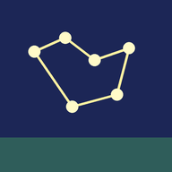
글자 별자리별을 이으면 자음이 빛나요노는 법 크게 반짝이는 별을 차례로 톡 하면 선이 이어져 자음이 완성돼요. 별은 쓰는 순서(획순)대로 놓여 있어요. 두 판에 한 번은 '긋기' 판: 반짝이 별을 손가락으로 따라 쓱 그으면 빛 길이 남아요(삐뚤어도 괜찮아요).
익히는 것 자음 모양, 쓰기 순서 감각, 손가락으로 따라 쓰기.
같이 놀 때 잠자기 전 차분한 놀이로 좋아요.
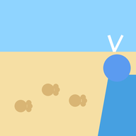
공룡 발자국 길발자국을 톡! 쿵쿵 글자 길노는 법 반짝이는 발자국을 톡 하면 티노와 코코가 번갈아 훌쩍 뛰어 그 글자를 읽어요. 끝까지 가면 고래가 물을 뿜으며 "공, 룡. 공룡!" 하고 단어를 완성해요. 두 아이가 한 번씩 번갈아 누르기 좋아요.
익히는 것 음절 하나하나 → 단어로 잇기, 왼쪽에서 오른쪽으로 읽는 방향.
같이 놀 때 발자국을 하나씩 짚으며 같이 소리 내 주세요. 다 간 뒤 발자국을 누르면 그 글자를 다시 읽어요.
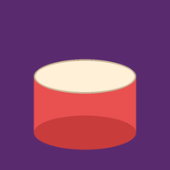
가나다 실로폰두드리면 글자가 노래해요노는 법 실로폰 바마다 글자가 있어 치면 그 글자를 소리 내요. 쓸면 차례로. 북·나팔·탬버린도 있고, 친구가 이름표를 달고 와요.
익히는 것 글자 소리, 순서.
같이 놀 때 "가, 나, 다" 같이 불러 주세요.
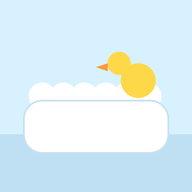
글자 목욕쓱쓱 닦으면 단어가 나와요노는 법 벽 타일의 얼룩을 손가락으로 쓱쓱 문지르면 그림과 단어가 드러나며 읽어줘요. 두 장 다 닦으면 샤워.
익히는 것 통단어, 문지르기(끌기).
같이 놀 때 깨끗해진 타일을 누르면 다시 읽어줘요.
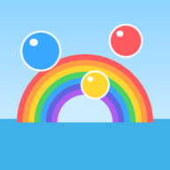
가나다 방울방울 속 글자를 톡노는 법 방울마다 글자가 들어 있어 톡 터뜨리면 그 소리를 내요. 일곱 개가 다 모이면 무지개 완성. 3단계는 가나다라마바사.
익히는 것 글자 하나하나의 소리.
같이 놀 때 오른쪽 위 톱니에서 '동요'·'색 이름'으로도 바꿀 수 있어요.
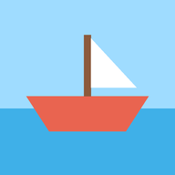
이름표 배친구를 끌어 배에 태워요노는 법 이름표를 단 친구를 배 쪽으로 끌면 자석처럼 앉고 "기역, 게!"처럼 첫소리와 이름을 읽어줘요. 넷이 타면 출발.
익히는 것 첫소리, 동물 이름.
같이 놀 때 두 아이가 한 친구씩 동시에 끌 수 있어요.
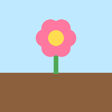
글자 정원쑥쑥 자라면 이름표가 피어요노는 법 흙을 톡 누르거나 문지르면 비가 내려 자라고, 다 자라면 "당근" 이름표가 피어나요. 바구니에 단어 카드가 모여요.
익히는 것 채소·꽃 이름, 원인과 결과.
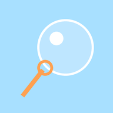
이름 방울꾹 누르면 이름이 날아가요노는 법 화면을 꾹 누르고 있으면 방울이 커지고, 크게 키우면 이름·단어가 타고 날아가요. 톡 치면 읽어줘요.
익히는 것 아이 이름·가족 단어. 아래 '아이 이름'에 넣으면 등장해요.
노는 법 달리다가 탭으로 점프해 돌멩이를 넘어요. 실패와 점수가 있는 예전 게임이라 한글·별 시범·잘 시간은 없어요.
넣으면 이름 방울·글자 까꿍 등에 이름 글자로 나와요. 이 기기에만 저장돼요.
켜 두면 공룡 7종(티라노사우루스·트리케라톱스·스테고사우루스·브라키오사우루스·안킬로사우루스·스피노사우루스·프테라노돈)과 고래 7종(혹등고래·대왕고래·범고래·향유고래·돌고래·벨루가·일각고래)이 모든 게임에 더 자주 나와요. 별자리엔 고래·공룡 별자리, 정원엔 공룡알, 목욕탕엔 장난감 고래, 실로폰엔 공룡·고래 친구가 와요.
최대 3개. 고른 자음과 그 자음으로 시작하는 단어가 여러 게임에 더 자주 나와요.
녹음해 둔 글자는 기기 음성 대신 그 목소리로 읽어줘요. 녹음은 이 기기에만 저장되고 밖으로 보내지 않아요.